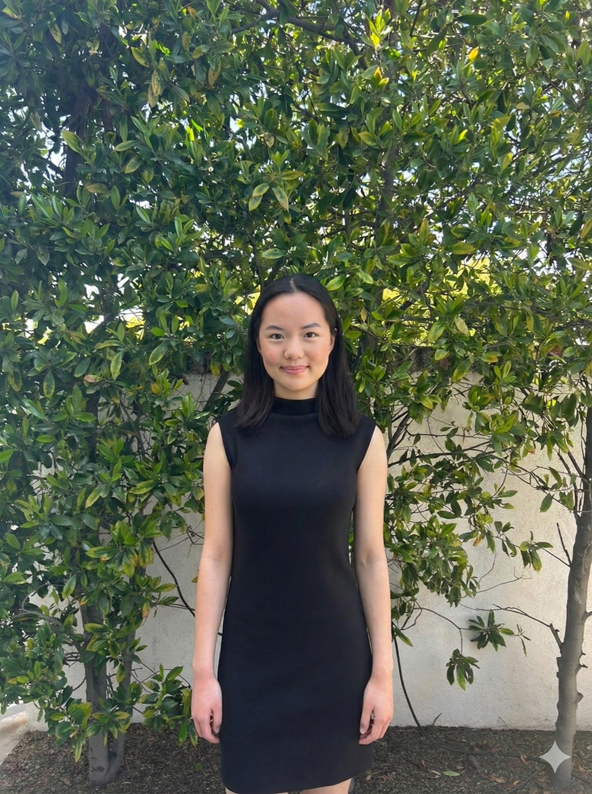
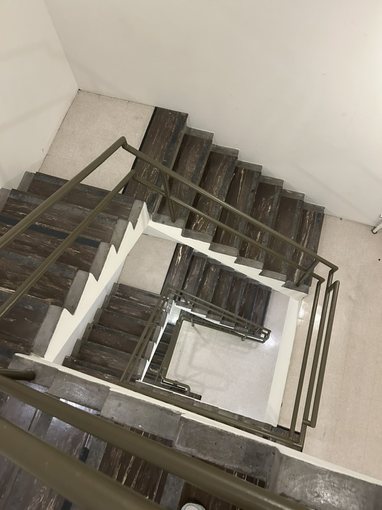
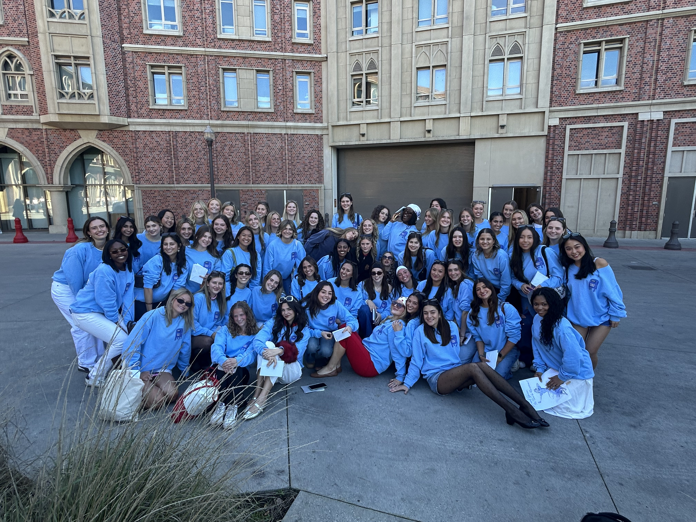
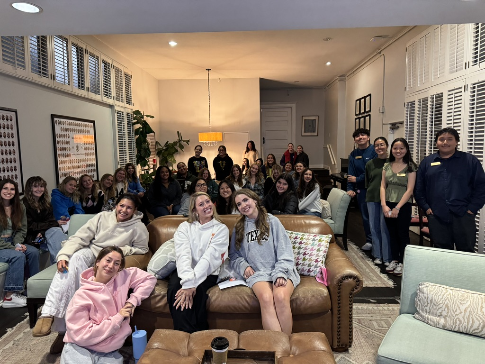
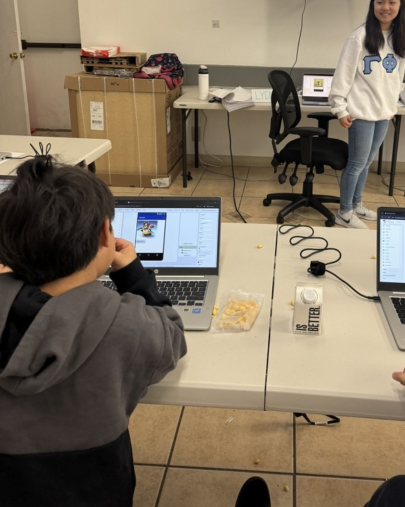
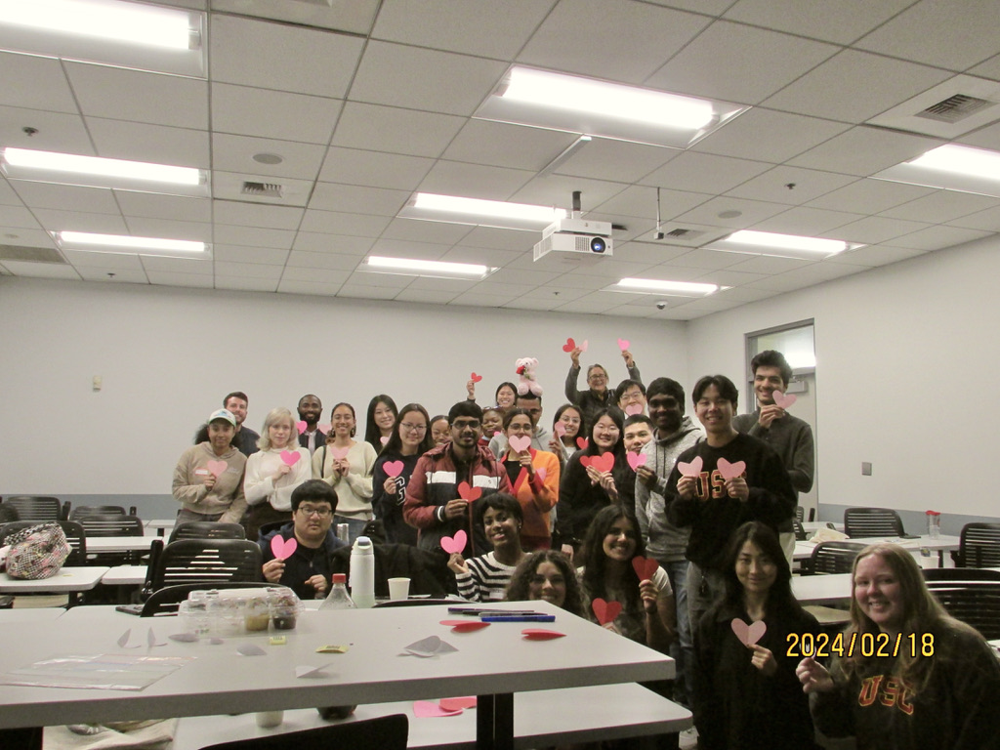
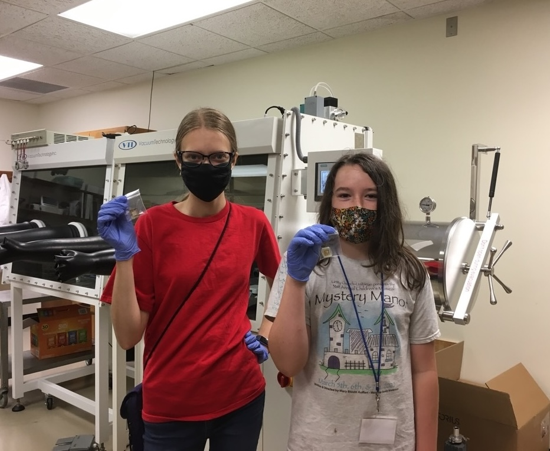

EDUCATION

MINNESOTA INSTITUTE FOR
TALENTED YOUTH (MITY)

TEACHING ASSISTANT AT
USC MARSHALL
August 2025 - May 2026:
MKT 402: Marketing Analytics

USC PANHELLENIC COUNCIL
August 2025 - January 2026:
Recruitment Counselor (RC) Trainings
- Role and expectations
- Conflict resolution, accountability, needs vs wants
- Values based recruitment
- Communication and boundaries
- Supportive listening
- Creating a welcoming space through language, bias awareness, and financial sensitivity
- Rules and judicials
- Elevator pitches
- Logistics (rounds, kickoff, MRABA, withdrawals, line ups)
- Improving retention

JUSTICE, EQUITY,
DIVERSITY, AND INCLUSION
(JEDI) PEER EDUCATOR
August 2024 - May 2025:
DEI Trainings for USC Student Organizations
- JEDI 100: Fostering Respectful Dialogue in Diverse Communities
- JEDI 101: Identity, Privilege, and Intersectionality
- JEDI 102: Implicit Bias and Micro-aggressions
- JEDI 110: Race and Power
- JEDI 111: Gender and Sexuality Discrimination
- JEDI 112: Economic Injustice
- JEDI 113: Religious Privilege and Discrimination

CS@SC VOLUNTEER →
TEACHING ASSISTANT →
CURRICULUM DEVELOPMENT
CONSULTANT
October 2022 - August 2024:
Virtual and in-person computer science classes for K-12 students
- Robotics
- Scratch
- Java
- Python
- Mobile App Development
- Web Development

UNDERGRADUATE STUDENT
CONSULTANT FOR USC BOVARD
September 2023 - April 2024:
Worked with graduate students known as international teaching assistants as part of their American Language Institute (ALI) courses
Goal areas:
- Teaching
- Language
- Culture

LEARNING ASSISTANT AT
HAMLINE UNIVERSITY
July 2021 - August 2021:
Renewable Energy Summer Camp for 9-12th graders